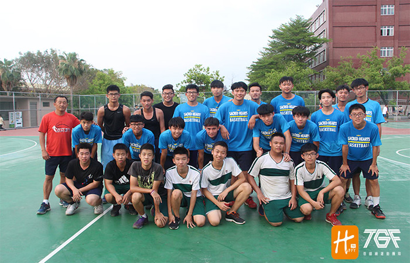

貼文時間：2017/06/09

17點下課鐘聲響起，許多學生集結在球場打球，每個球場人滿為患。17:05分到17:50是正心籃球隊的練習時間，國中與高中部的球員都集中在同一個球場，一個場地一起練，將大家的感情凝聚在一起。如同程鴻傑教練畢業於正心服務於正心的情懷，擁有20年執教資歷，教練笑著說：「因為沒有人要接啦！」
正心籃球隊有個特別的「直升」體系，很多球員幾乎都是從國中直升高中。雖然比較沒辦法與強隊抗衡，但家長會因為學生對籃球的熱情去成全，打得好不好是其次，重點是培養興趣。與科班球隊不同，每天練習到的人都不一樣，練球時間也不多。程鴻傑表示，學生都說他的名言是，你可能有一顆比人聰明的腦袋，關鍵字是可能，練習時間少就要提升效能，更要在場上吸收，轉換成自己的東西，把體能訓練放在基本功裡，不可能每種都練，一次做好一件事，進步慢但用長時間去累積。
即將畢業的主力中鋒袁翔新，國中剛進來的時候連球都不會打，現在卻是隊上主心骨。教練對他來說，就像是乾爸爸一樣的存在，一直耐心的指導他，不會像其他學校一樣用責備的方式去罵，灌輸他快樂打球的觀念，這才是最重要的。
同樣是三年級的前鋒廖家德，因為基本動作不太好，造成比賽的時候很常被斷球，雖然灰心，但靠著持續不斷的練習，在最後一次聯賽中，第一次投進一顆三分球，展現自己苦練的成果，連他自己也嚇到了。
國中是田徑隊的許惟勛，高中加入籃球隊是異常辛苦。比賽中曾經被吹十幾次走步，後來靠著努力不懈的鍛鍊，才成就現在的自己。但在進步背後，過程並不那麼順遂。從高一到高三身上都有受過大大小小的傷，高一的急性拉傷、高二的右手骨裂，升高三的暑假左腳骨裂，歷經打石膏跟復健，找不到球感的挫折，但也都這樣撐過了，現在看來也沒甚麼了。
高二的控球後衛，許仲輝說，遇到比較強的對手會緊張，不過上場就不會管那麼多，盡力幫助球隊。雖然很想秀三分球，但知道球隊的優勢是在禁區，還是會無私的分球，並在外線埋伏，有空檔就投。對自己的期望就是能幫助球隊打進南區複賽，並兼顧課業。
記取輸球時的每一個瞬間，與勝利擦身而過的懊悔，不管對手強弱更要積極去打因此無論輸贏多少，起碼都是全力以赴。這是他們在大大小小的比賽中，學習到最重要的事情，高二前鋒吳宏蔚表示，做好自己的該做的，就夠了。
說到教練最深刻的比賽，卻深思熟慮了一陣子，才逗趣的說：我們大部分都輸啦！在去年拿到縣內冠軍那次，四強賽時碰到永年中學，才開賽兩分鐘，控球就因十字韌帶斷掉下場了，一路被壓著打，打到最後第四節剩下五分鐘，中鋒袁翔新也犯滿離場，那時我告訴他們：「過了這關你們才能去南區啊！剩下的人要扛起責任。」最後逆轉贏得比賽，不是靠主力，逆轉的果實總是最甜美的。
最後，程鴻傑想對球員說：「籃球運動就是個團隊運動，他是用時間堆砌出來的」，天道酬勤，你只要努力付出加上熱情，即便你不被看好，你終究會走到那一步，冠軍得來不易，也是花5年的時間所換來的。
「做最好的準備，做最壞的打算」，今天球是圓的，球要打下去才知道，只希望大家能把最好的表現拿出來，不要因為外在影響到狀態，就算輸也是輸的無怨無悔。他們是正心高中籃球隊。